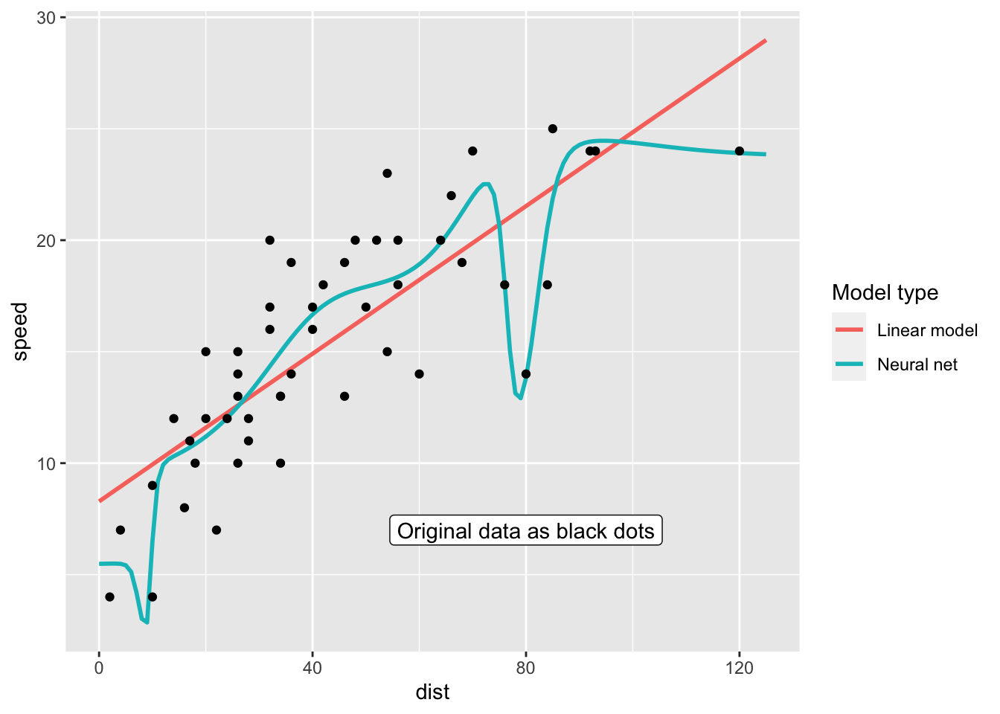

set.seed(123)
library('tidyverse')
library('knitr')
library('neuralnet')
library('plotly')Leave-one-out cross-validation in R
Strategy
- Fit “straight” models: linear model, neural net with 2 layers with 3 perceptrons each
- Perform “Leave-one-out-cross-validation”
- Calculate mean absolute prediction error of the different methods
- In cross-validation case for the left-out data point
Implementation
leave_one_out <- Vectorize(
function(i, type) {
training <- cars[-i, ]
test <- cars[i, ]
if(type == 'lm') {
fm <- lm(speed ~ dist, data = training)
pp <- predict(fm, newdata = test)
} else {
fm <- neuralnet(speed ~ dist,
linear.output = TRUE, data = training,
hidden = c(3, 3),
stepmax = 1e+7, threshold = .5)
pp <- predict(fm, newdata = test)[, 1]
}
return(pp)
}, vectorize.args = 'i')fm_lm <- lm(speed ~ dist, data = cars)
fm_nn <- neuralnet(speed ~ dist,
linear.output = TRUE, data = cars,
hidden = c(3, 3),
stepmax = 1e+7, threshold = .5)
data <- tibble(
cars,
p_lm_straight = predict(fm_lm),
p_nn_straight= predict(fm_nn, newdata = cars)[, 1],
p_lm_looc = leave_one_out(1:nrow(cars), type = 'lm'),
p_nn_looc = leave_one_out(1:nrow(cars), type = 'nn')
)data |>
pivot_longer(cols = -dist, names_to = 'Method', values_to = 'speed') |>
mutate(Method = str_replace(Method, 'speed', 'Original data')) |>
ggplot(aes(dist, speed, colour = Method)) +
geom_point() +
labs(y = 'speed')
ggplot2::last_plot() |> ggplotly()data_long <- data |>
pivot_longer(cols = -c(dist, speed))
data_long |>
ggplot(aes(dist, speed - value)) + geom_point() + facet_wrap(vars(name)) +
labs(y = 'Prediction error')
data_long |>
mutate(error = value - speed,
squarred_error = error^2) |>
rename(Method = 'name') |>
group_by(Method) |>
summarize('Mean absolute error' = mean(abs(error)),
'Mean squarred error' = mean(squarred_error)) |>
kable(align = 'c')| Method | Mean absolute error | Mean squarred error |
|---|---|---|
| p_lm_looc | 2.633568 | 10.525331 |
| p_lm_straight | 2.518286 | 9.560425 |
| p_nn_looc | 2.888501 | 11.961281 |
| p_nn_straight | 1.948435 | 5.906101 |
Conclusion
- The neural net seems to overfit!